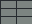
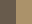

独立静态 PNG / Codex
地下石墙独立素材
把规格、制作步骤与两张参考图交给 Codex。
这里生成任务包，图片由执行端另行制作。
本次规格
- PNG 画布
- 384 × 384 px
- Unity PPU
- 100 项目默认
- 世界尺寸
- 3.84 × 3.84 单位
- 背景要求
- 透明
- 预期成果
- output/asset.png 由执行端生成


正在核对固定样例…
查看生成的 Codex 指令
检查后可查看。
查看权威规范
检查后可查看。
两张图均为自制测试夹具。完整表单、预设与参考图管理留待后续审阅通过后开发。